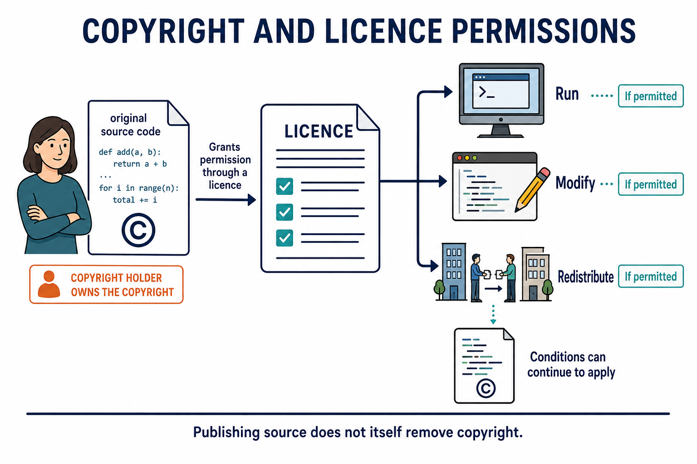

Why software needs copyright protection
Visual overview
Ownership and permission perform different roles

Visual transcript
- The copyright holder can grant permissions through a licence.
- Running, modifying and redistributing are distinct activities: check which acts the terms permit.
- Conditions, such as retaining notices, can continue to apply to a redistributed copy.
- Publishing source does not itself remove copyright or authorise every use.
Explain the need for protection
Creating software can take substantial skill, time and investment, while reproducing the finished work is inexpensive. Without enforceable rights, others could distribute the work without respecting the creator’s terms. Copyright provides a basis for challenging unauthorised copying and for granting permissions that can support continued development.
Identify what is protected
The protected subject includes original program expression and documentation. Copyright does not give ownership of every underlying idea, procedure or mathematical method. Writing an independent implementation of a general idea and copying protected source code are different acts; the exact legal position also depends on applicable law and exceptions.
Separate ownership from use
A licence is permission to perform particular acts under stated conditions. Buying a copy normally obtains the permitted use, not ownership of the copyright. The rights holder can authorise redistribution while retaining copyright and requiring notices to remain. An open licence therefore uses copyright permissions rather than cancelling ownership.
Avoid a registration misconception
Copyright generally arises automatically for qualifying software; a notice or record of authorship can help identify the rights holder. Do not teach that paying a fee, adding a symbol or registering every program is universally required before any protection exists. The practical task here is to identify the rights and the permissions needed, rather than memorise a country’s legal procedures.
Worked example · A purchased program copied to a class
- Situation
A tutor buys software whose licence permits installation on one machine. The tutor wants to copy it to twenty classroom computers.
- Read the permission
The payment obtained a one-machine permission; it did not transfer the source code's copyright or grant twenty installations.
- Decision
Obtain suitable classroom permissions or select another tool whose licence permits the intended installations.
- Reason
Cheap copying does not remove the creator's enforceable rights or enlarge the licence that was purchased.
Core explanation · Exam essentials
- Copyright protects software expression and supports control of restricted copying and distribution.
- A licence grants specified permissions; purchasing a copy or publishing source does not itself transfer copyright.